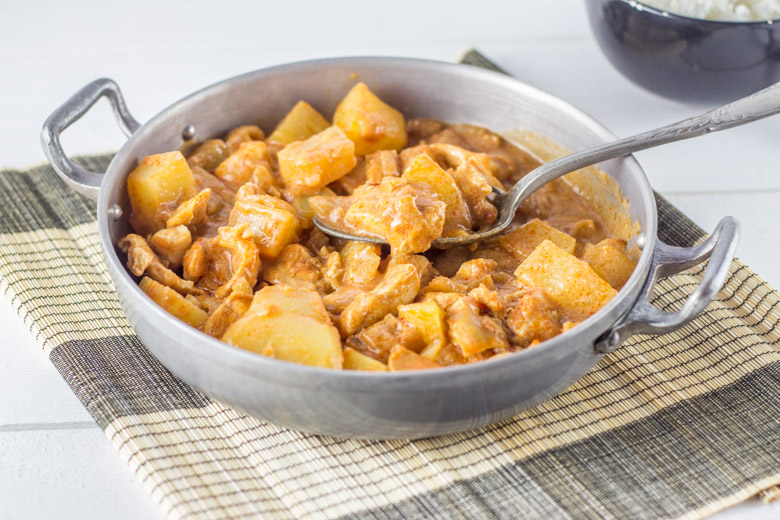
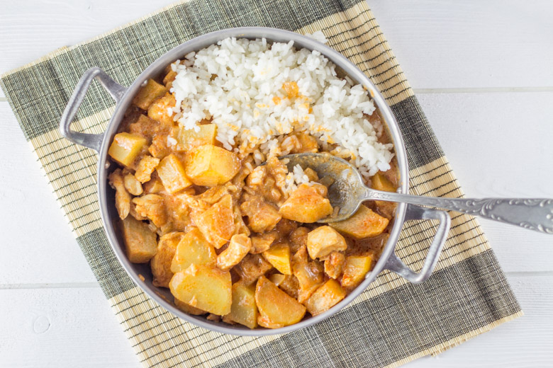

Poulet au curry massaman

Parlons peu parlons thaï avec cette recette de poulet au curry massaman.
Ah la Thaïlande!! S’il y a bien un pays dans lequel nous voulons aller c’est bien celui là (enfin non, il y a plein d’autres où nous voudrions aller^^…). Ma belle sœur l’a fait pour nous et elle nous est revenue avec plein d’idées de recettes dans un coin de sa tête qui m’ont l’air toutes aussi bonnes les unes que les autres!! La foodista tombait alors très bien car ce fut l’occasion pour nous de tester le poulet au curry massaman dont elle raffolait. Je pense maintenant comprendre pourquoi elle a autant aimé et ça me conforte dans l’idée qu’un jour nous irons nous perdre par là-bas.
Avant de vous parler de la recette de mon poulet au curry massaman, je vais rapidement vous rappeler le pourquoi de cette recette.
En effet, aujourd’hui est le rendez-vous de la 8ème édition de la Foodista challenge et c’est Audrey du blog Cooking’n’co qui était en charge du nouveau thème.
Voici un petit rappel pour vous présenter ce qu’est la Foodista :
Il s’agit d’un défi culinaire, entre blogueurs et non blogueurs autour d’un thème commun décidé par la marraine désignée à chaque édition, crée par… moi-même! J’ai donc fixé les règles du jeu et chaque marraine doit en plus de décider d’un thème, choisir deux règles parmi les suivantes (histoire de pimenter un peu le tout): – Un ingrédient imposé pour les recettes sucrées et un autre ingrédient pour les recettes salées (un ingrédient commun si cela est possible) ; – Une couleur qui devra être présente dans la recette ou dans la décoration ; – Un pays qui inspirera les recettes du thème ; – Un accessoire qui devra se trouver sur les photos
Anciennes éditions : Foodista Challenge #1 : Stéphanie de Cuisine moi un mouton : « Cupcakes & muffins » Foodista Challenge #2 : Lucie de Goulucieusement : « Goûter d’automne » Foodista Challenge #3 : Aude de Contes et Délices : « Le Brunch » Foodista Challenge #4 : Julia de Les Cookines : « Les recettes cosy de Scandinavie » Foodista Challenge #5 : Anaïs de Lemon and sardine : « Un zeste de méditerranée » Foodista Challenge #6: Nath de Pourquoi je grossis… : « Petits délices… pour grands gourmands » Foodista Challenge #7: Gordana des Recettes à gogo : « Préparons nos PICNICS de PRINTEMPS »
A l’occasion de cette huitième édition, Audrey nous a proposé comme thème celui de la cuisine asiatique. Elle nous a donc imposé un continent mais aussi une épice devant commencer par la lettre « C ». Vous l’aurez compris en lisant ma recette du poulet au curry Massaman, mon épice est le « curry » et la « cardamome » et j’ai choisi la Thaïlande comme pays asiatique.
En parlant de Foodista, je vous donne rendez-vous mercredi 29 avril pour une édition spéciale alors n’oubliez pas de venir vous inscrire!!! 🙂
Pour en revenir à ma recette, ce plat est traditionnellement servi avec du riz et peut être cuisiné avec d’autres viandes telles que du bœuf, de l’agneau, du canard etc… (j’aurais peut être dû en faire au mouton…^^). Ce fut une totale découverte pour nous et aujourd’hui on ne s’arrête plus d’en manger. Très facile et rapide à préparer, ce plat est un vrai délice. Je le prépare assez épicé mais il est possible de diminuer les doses de curry massaman pour que ce soit plus doux. En ce qui concerne les ingrédients tels que la pâte de curry massaman ou encore le concentré de tamarin vous les trouverez facilement dans n’importe quelle épicerie asiatique.
Je vous laisse maintenant avec la recette et j’espère qu’elle vous plaira.
Ingrédients
- Poulet - 450g
- Sucre roux - 1+1/2 càs
- Lait de coco - 500ml
- Sauce nuoc mam - 2 càs
- Pâte de curry massaman - 3 càs
- Pomme de terre - 2
- Concentré de tamarin - 3 càs
- Echalotes - 2
- Gousses de cardamome - 3
- Cacahuètes grillées non salées - une grosse poignée
Instructions
- Dans une grande poêle, sur feu moyen, verser le pâte de curry massaman
- Ajouter le lait de coco et mélanger pour que la pâte de curry se mélange totalement
- Couper les pommes de terre en morceaux ainsi que le poulet
- Les ajouter au mélange lait de coco-pâte de curry
- Verser le concentré de tamarin, la sauce nuoc mam et le sucre roux. Mélanger
- Pendant ce temps, écraser grossièrement les cacahuètes et ciseler les échalotes
- Les ajouter au mélange
- Ajouter les gousses de cardamome
- Laisser sur le feu le temps que les pommes de terre cuisent (à ce stade il reste généralement 15-20 minutes de cuisson)
- Pendant ce temps vous pouvez préparer votre riz Personnellement, j'utilise du riz à sushis pour avoir un riz bien collant
- Servir bien chaud


Les tips de la communauté
Recette de curry très appréciée pour ses saveurs exotiques bien équilibrées et sa presentation attrayante. Les ingrédients particuliers comme le tamarin et le lait de coco sont bien reçus. Un testeur a noté que le concentré de tamarin était découverte positive.
Astuces
- Concentré de tamarin donne l'équilibre sucré-acidulé caractéristique du curry massaman
- Combinaison de lait de coco doux et saveurs épicées très bien dosée
- Recette classée parmi les plats asiatiques rapides à réaliser
Variantes suggérées
- Curry doux peut remplacer la pâte de curry massaman (résultat différent mais bon)
Ajustements signalés
- toujours avoir les papilles en alerte 😉